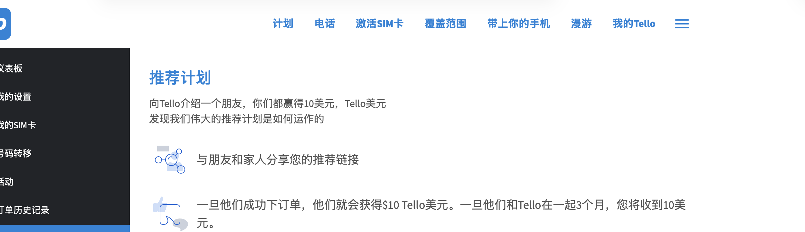
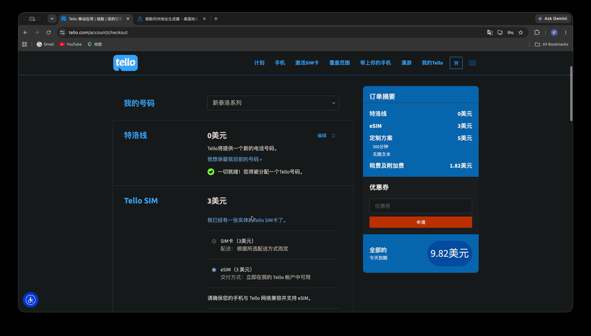

重要说明：Tello 官方目前说明，首次激活 eSIM 需要人在美国，并连接美国移动网络。本文会如实记录我在美国以外完成设置的个人结果，但它不代表官方流程，也不能保证其他人可以复现。请以操作时的 Tello 官方规则为准。
联盟披露：本文包含 Evan 的 Tello 推荐链接。符合条件的新用户通过该链接注册并完成首笔成功订单后，目前可能获得 10 Tello Dollars；账户保持符合条件满 3 个月后，Evan 也可能获得 10 Tello Dollars。奖励不是现金，资格、金额和规则可能变化；Tello 条款目前还说明，美国境外客户的推荐不符合 Tello Dollars 资格。请以注册时的 Tello 条款为准。使用推荐链接不会增加你的购买价格。详情可查看广告与联盟披露。
为什么我需要一个能长期保留的美国手机号
如果平时要使用美国银行、信用卡或者其他美国平台，一个能长期保留的美国手机号会方便很多。
我现在使用的是 Tello，套餐最低每月 5 美元。它不是临时接码服务，号码可以在账户正常续费和符合服务规则的前提下长期保留。这次我把从选套餐、付款，到安装 eSIM、打开 Wi-Fi Calling 的过程完整走一遍。
开始前先准备什么
开始前先把需要的设备和资料准备好，避免操作到一半再回头寻找。
- 支持 eSIM 的无锁手机。手机需要兼容 eSIM，并且没有运营商锁。很多较早的中国大陆版 iPhone 不支持 eSIM，但部分新机型已经支持；先在 Apple 的中国大陆 eSIM 机型说明和 Tello 兼容性页面核对自己的具体型号，不要只凭销售地区判断。
- 长期使用的邮箱。它会用于 Tello 账户登录、订单通知和后续账户管理。
- 可以在线付款的信用卡或借记卡。付款时应填写这张卡真实的账单地址。
- 稳定的操作环境。我付款时尽量让网络地区与银行卡账单地址所在地区保持一致，并避免在结账过程中反复切换网络。这是我的个人操作习惯，不是审批或成功保证。用中国卡时，我直接使用中国网络，没有开启 VPN。
- 美国 ZIP Code 和真实有效的美国地址。ZIP Code 会影响订单税费，后续启用 Wi-Fi Calling 时还需要单独填写 E911 地址。
使用推荐链接时，顺序很重要
如果准备使用推荐链接，应先从链接进入，再注册新账户。账户已经创建后，通常不能再补关联推荐关系。
Tello 官方当前说明，符合条件的新用户通过推荐链接注册并完成首笔成功订单后，可获得 10 Tello Dollars；推荐人在新用户保持符合条件满 3 个月后也可能获得 10 Tello Dollars。Tello Dollars 不是现金，也不能兑换成现金。
这是联盟/推荐链接。请先阅读上方披露，并在注册和付款前核对 Tello 最新的推荐计划说明与适用资格。

我为什么选择每月 5 美元套餐
我选择的是 No Data，也就是不需要移动数据，再选择 300 分钟通话。短信包含在套餐里，当时显示的月费是 5 美元。
我主要用它保留号码、收短信和接验证码，不会把它当作主力上网卡，所以这个套餐对我已经够用。如果你的通话或数据需求不同，应按自己的使用场景选择，并以 Tello 当前套餐页面为准。
创建账户并检查设备兼容性
选择套餐后，创建 Tello 账户并填写长期使用的邮箱和密码。
使用手机登录网站时，页面会检查手机是否能够使用 eSIM；使用电脑操作时，通常需要输入 IMEI。可以在手机“设置”里的“关于本机”或相应设备信息页面找到 IMEI。它属于设备识别信息，不应出现在公开截图或文章中。
只有页面显示设备兼容后，我才继续下一步。Tello 官方也要求设备支持 eSIM、已经解锁，并连接稳定的 Wi-Fi。
ZIP Code、账单地址和 E911 地址不是一回事
下一步先填写 ZIP Code。我当时选择的是俄勒冈州，因为那里没有一般性的州销售税。不过，手机服务仍可能产生通信相关税费和附加费，所以最终金额必须看结账页面，不能只看套餐标出的 5 美元。
我一开始也试过地址生成器，但不少地址无法通过验证。能使用与自己实际安排相符、真实有效的美国地址，就不要靠随机生成的资料反复碰运气，更不要向服务商提交虚假信息。
| 资料 | 主要用途 | 填写原则 |
|---|---|---|
| ZIP Code | 套餐可用性与税费估算 | 使用与真实地址安排相符的邮编 |
| 银行卡账单地址 | 付款验证 | 填写发卡行记录的真实账单地址 |
| E911 Address | Wi-Fi Calling 紧急呼叫定位 | 填写真实有效的美国地址 |
付款与第一次真实成本
到了付款页面，账单地址应按银行卡真实的账单地址填写。付款过程中，我也尽量不来回切换网络。
我这次的订单金额很清楚：
| 项目 | 金额 |
|---|---|
| 套餐 | 5.00 美元 |
| eSIM | 3.00 美元 |
| 税费和附加费 | 1.82 美元 |
| 第一次付款合计 | 9.82 美元 |
所以，5 美元只是套餐价格，不代表第一次结账只付 5 美元。每个人的税费和附加费可能不同，确认金额和地址无误后，再以自己的订单详情为准。

订单完成后安装 eSIM
付款后，订单会先显示 Processing，处理完成后，账户里才会出现 eSIM 安装信息和二维码。
二维码与自己的号码激活有关，不能公开，也不要转发给其他人。Tello 官方说明，这个二维码是唯一的，通常只能用于一次激活。
在 iPhone 上，我使用的路径是：
设置 → 蜂窝网络 → 添加 eSIM → 使用二维码
然后扫描 Tello 账户页面提供的二维码。Android 设备的菜单名称会因品牌不同而变化，也可以在 Tello 的官方 eSIM 安装说明中核对对应路径。
设置 E911 Address，再打开 Wi-Fi Calling
eSIM 安装好以后，我先在 Tello 账户里设置 E911 Address。它不是前面用于订单的 ZIP Code，也不是银行卡账单地址，而是 Wi-Fi Calling 使用的紧急呼叫地址，因此需要填写真实有效的美国地址。
我试过地址生成器，这一步经常保存失败。换成真实有效的地址后，操作顺利很多。E911 保存成功以后，再去手机设置里打开 Wi-Fi Calling。
对我来说，这才是 Tello 最重要的部分。在服务已经按官方要求完成激活后，人在美国以外时可以通过 Wi-Fi Calling 继续使用号码进行支持的通话和短信；功能可用性仍取决于设备、网络、账户状态和 Tello 当时规则。
官方规则与我的实际结果必须分开
Tello 当前官方规则：首次激活需要本人位于美国，并让设备首次连接美国移动网络。官方帮助中心明确写明，在海外不能完成首次激活。
我的个人结果：我这次人在美国以外，使用美国住宅网络完成了下单和 eSIM 安装，最后也成功打开 Wi-Fi Calling，电话与短信可以正常使用。
这只是我这一次的实际记录，不是官方流程，也不构成可复现承诺。网络出口不能替代真实位置、账户资格或运营商规则；不要为了激活虚构身份、地址或其他资料。请先阅读 Tello 的境外激活说明，再决定是否适合自己的情况。
最后测试短信、电话和 My Tello App
全部设置完成后，我先测试短信，再测试电话。两边都可以正常使用，号码才算真正设置完成。
最后也可以安装 My Tello App。Wi-Fi Calling 正常时，平时直接使用手机自带的电话和短信功能即可。My Tello App 更像是备用的拨号工具，可以通过网络主动打电话，但它不能代替系统短信，也不能在 App 里接收来电。
总结
对我来说，Tello 的价值是成本不高，而且号码可以在正常续费和符合服务条款的前提下长期保留。我选择 No Data、300 分钟通话和包含短信的 5 美元套餐，第一次付款加上 eSIM、税费与附加费后，总额是 9.82 美元。
完整顺序是：准备兼容的无锁手机、长期邮箱和付款卡；选择套餐；检查设备兼容性；使用真实资料完成付款；保护好 eSIM 二维码；设置 E911 Address；按照官方条件完成激活并打开 Wi-Fi Calling；最后测试短信和电话。
后续如果价格、推荐奖励、激活要求或功能发生变化，应以自己操作时的 Tello 页面和官方条款为准。
免责声明：本文仅为个人使用记录和信息整理，不构成通信服务、金融、法律或税务建议，也不保证任何用户可以在美国以外完成首次激活。第三方服务的价格、税费、设备兼容性、推荐奖励和使用规则可能变化，请在购买前核对 Tello 官方信息，并遵守所在地法律和服务条款。
前后篇
上一篇：为什么我使用固定美国 IP？711Proxy 购买、检查与设置全过程
下一篇：Hilton Amex 三张卡限时开卡礼：70K、130K 还是 200K？